Las cuatro maquetas, en el juego Izquierda, la maqueta que aprobaste; derecha, la captura del juego compilado. Las diferencias son las que pediste: sin PM ni barra de moral.
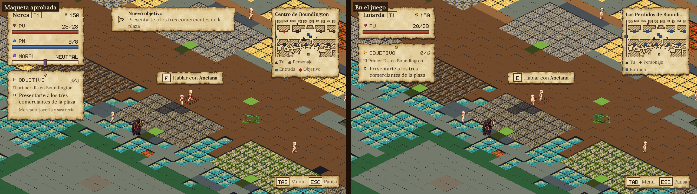
P03a · HUD en retales. El retal del personaje se queda en nombre, tier, oro y vida. El rombo del NPC va en el suelo, por debajo de los sprites. 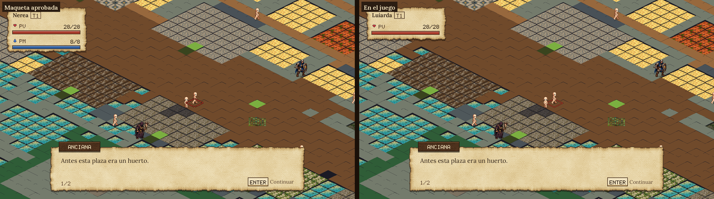
P03b · Diálogo en hoja suelta. Una línea por página (1/2); la última dice «Cerrar». El rombo sigue bajo quien habla. 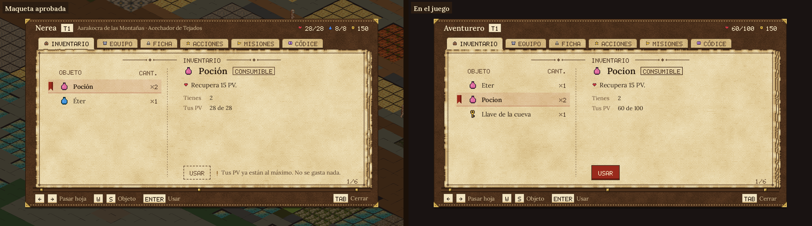
P04a · Cuaderno. Cabecera sin PM. Con vida por debajo del máximo, USAR se enciende en lacre (en la maqueta estaba apagado porque la vida estaba llena). 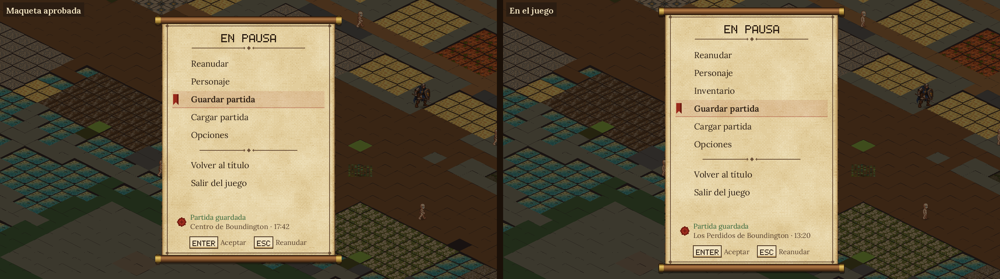
P05a · Papiro de pausa. El juego tiene una entrada más (Inventario); el guardado confirma zona y hora junto a la acción. Explorar y hablar 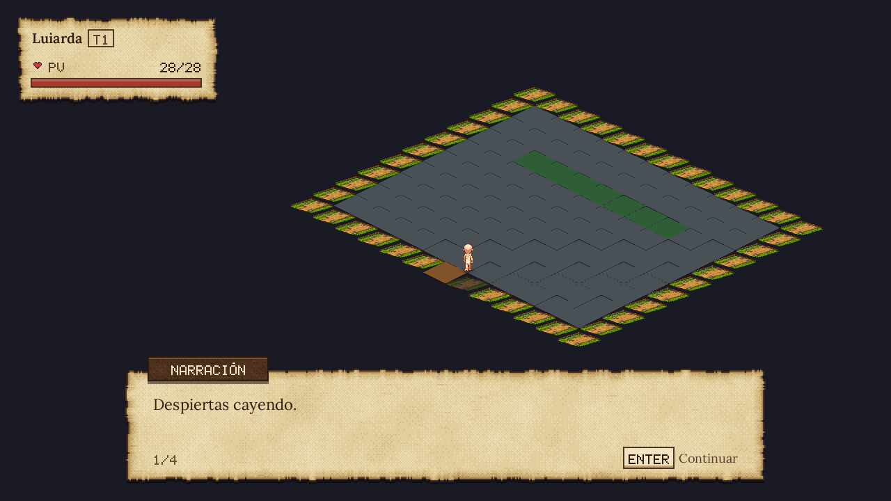
Prólogo: sin hablante, el rótulo dice NARRACIÓN. HUD reducido a nombre y vida. 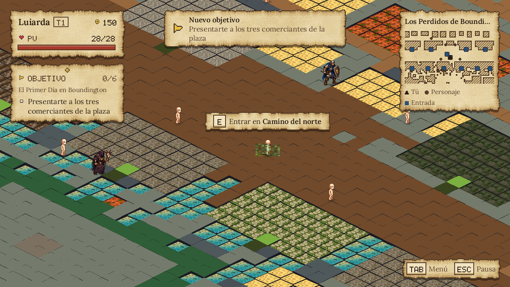
Llegada a la ciudad: aviso «Nuevo objetivo» (se va solo a los 5 s), objetivo seguido, minimapa y aviso de la puerta que se pisa. 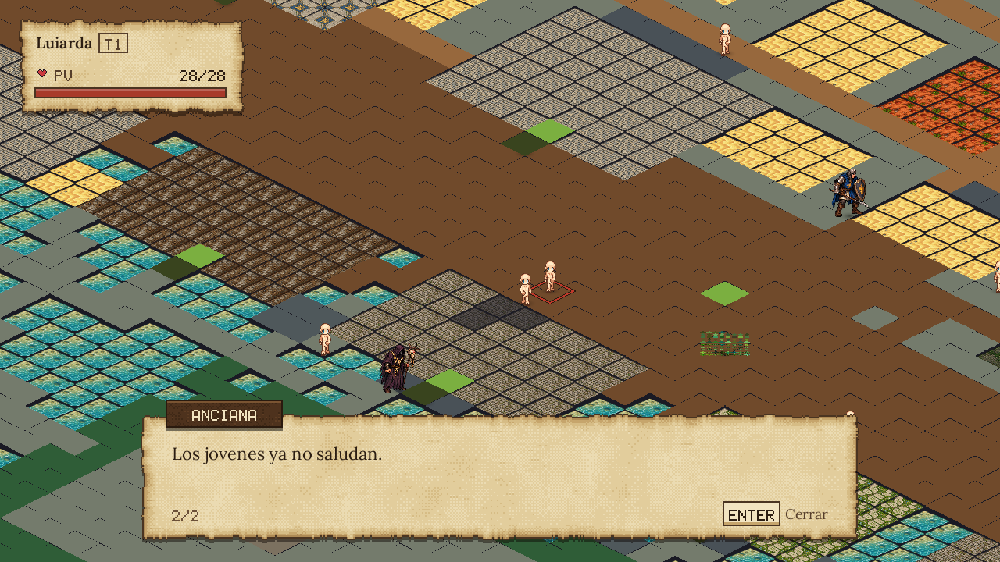
Última página del diálogo: ENTER Cerrar. 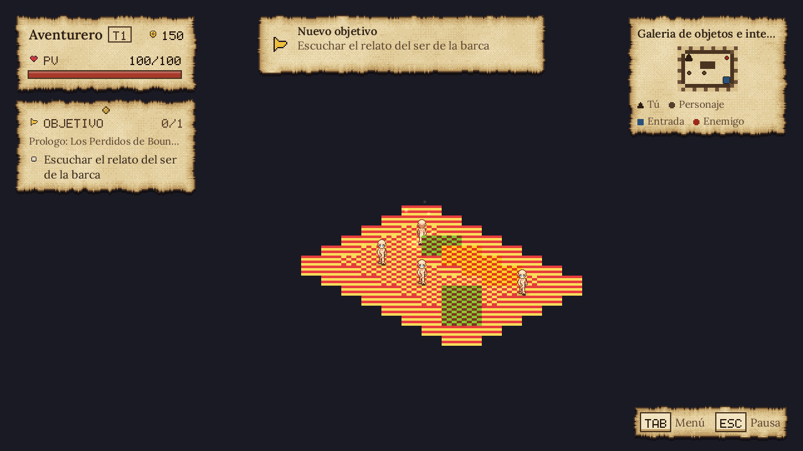
Un nivel pequeño (la galería de ejemplos): el minimapa se amplía en vez de quedarse en un sello. El cuaderno (TAB) Seis hojas; ← → pasan hoja sin dar la vuelta en los extremos.
Pasar hoja Fotogramas seguidos del juego (el contenedor dibuja a unos 10 fps; a 60 fps la vuelta son 22 fotogramas de 360 ms).
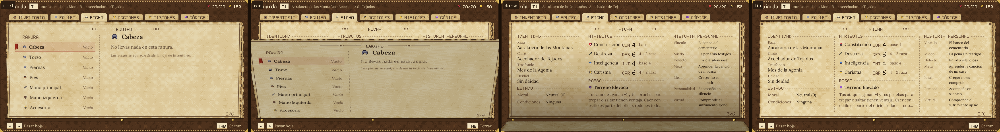
Hacia delante: la hoja cae desde la bisagra de abajo y enseña el dorso. 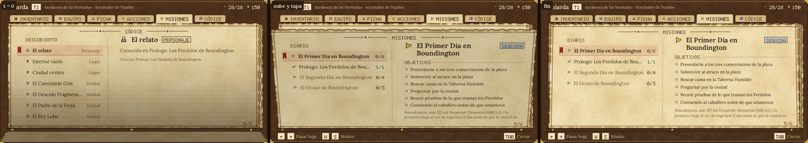
Hacia atrás: la hoja anterior sube y tapa. Pausa, opciones y derrota 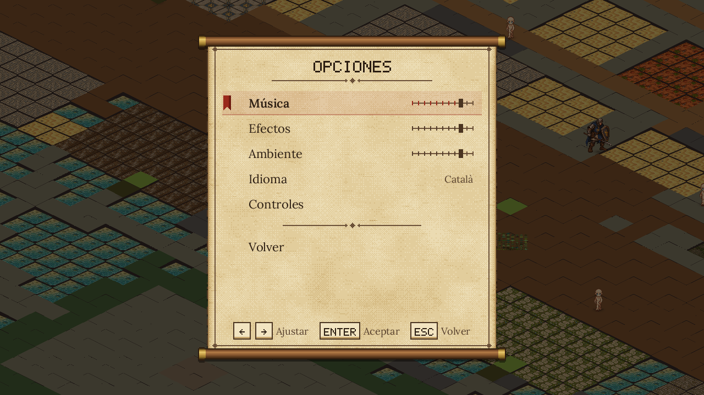
Opciones: papiro más ancho para que quepa su pie; ESC vuelve a la pausa. 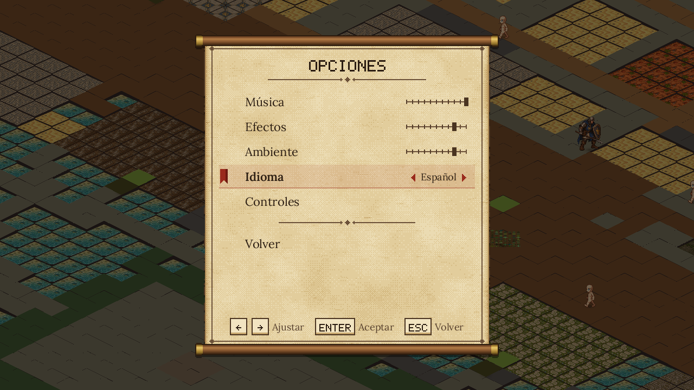
Idioma con su nombre propio y flechas en la fila con foco. Pausa → Personaje abre el cuaderno por la Ficha (antes no hacía nada). 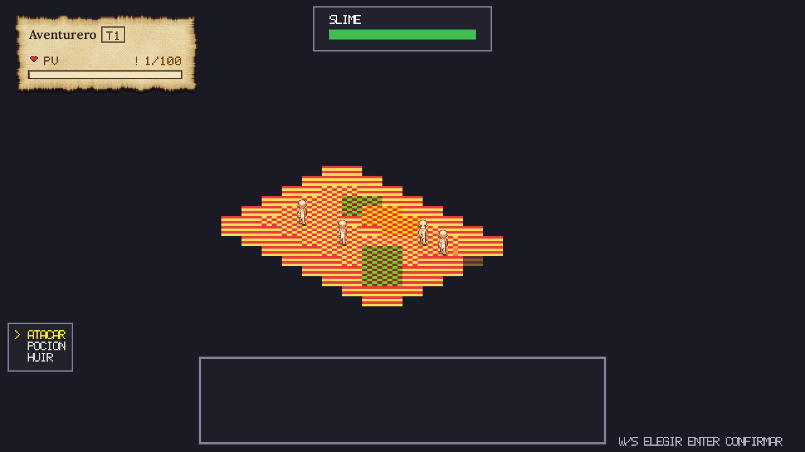
Combate: por ahora solo cambia el retal del personaje (el resto es el menú de siempre). 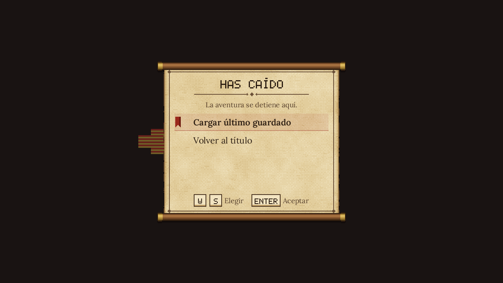
Derrota en papiro. «Cargar último guardado» ya encuentra la partida rápida. La moral en el avatar Aura a los pies y tinte del sprite. Neutral no lleva nada; el HUD ya no tiene barra de moral.
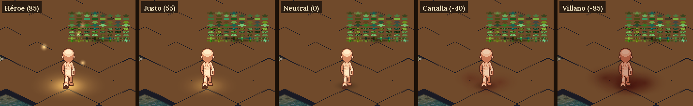
Los cinco tramos, con los mismos cortes que la moral del juego (≤-60, ≤-20, <40, <75). 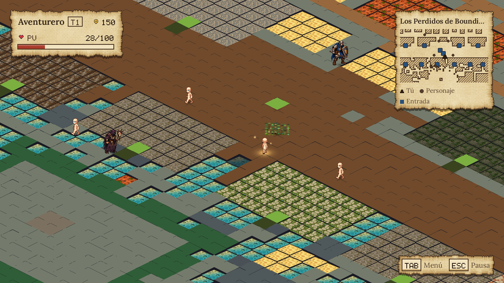
Héroe en la ciudad: halo dorado y motas de luz. 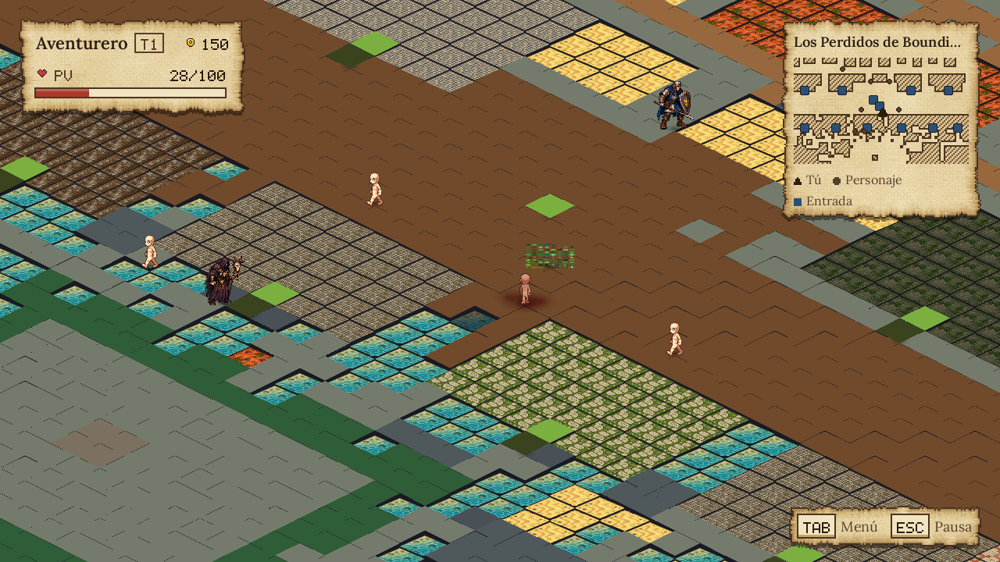
Villano: humo rojo oscuro y el sprite en sombra.